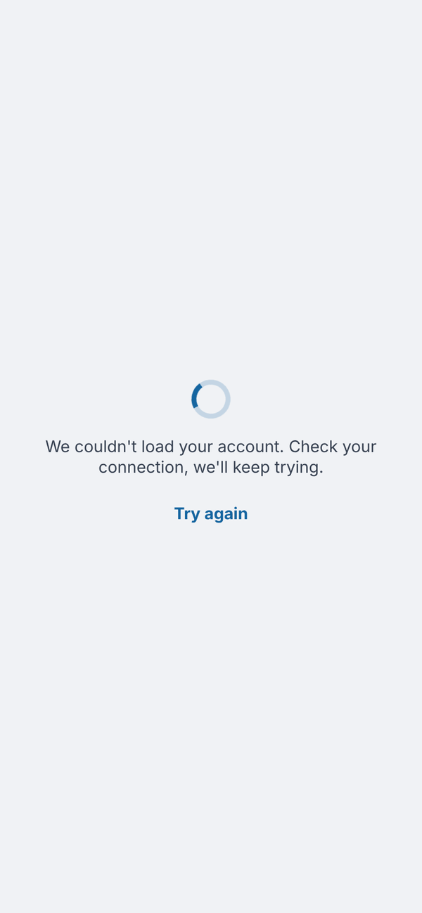
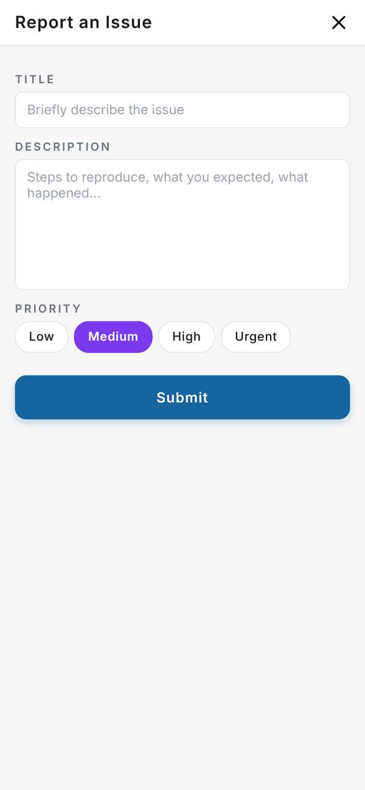

Totality Nutrition guide
Troubleshooting
Fixes for the most common problems, and how to report an issue to us from inside the app.
Most problems are fixed by getting the latest version of the app. Work through the list below, and if you're still stuck, report it.
First, update the app#
App updates arrive over the air. To pick one up:
- Open the app.
- Close it fully (swipe it away from your recent apps).
- Open it again.
A fresh install still needs that one close and reopen. On the web, refresh the page.
Common problems#
"We couldn't load your account. Check your connection, we'll keep trying." The app couldn't reach our server. It keeps retrying by itself; tap Try again once your connection is back. Your plan and data are safe.

Paid screens are locked but I've paid. Close and reopen the app. On iPhone, tap Restore Purchases on the plans screen. Check Settings, Subscription shows Active.
I can't log in. Check the email has no typo and try Forgot Password?. If it says to confirm your email, tap the link in the confirmation email first.
Barcode scanner won't start. Allow camera access for the app in your phone's settings. On the web, type the barcode number instead. On Free, check you have scans left this week.
A food's numbers look wrong. Tap Edit on the Per 100g card before adding it, or tap the food in your log afterwards to fix the numbers.
Food log shows yesterday in the morning. It moves to the new day by itself when you come back to the screen. Tap the arrows if you're on a different day on purpose.
Tali says "Tali needs a quick breather". You've made a lot of requests in a few minutes. Wait a few minutes and try again.
Tali says I've used my limit. Tell Tali has a daily limit (3 on Free and Nutrition, 5 on the trial, 50 on Nutrition + AI) that resets at midnight Sydney time. Other Tali features use credits. See Tali AI.
I'm not getting the 7:30pm reminder. It only shows on the phone app, when you have a streak of 2 days or more and haven't logged that day, and only if you allowed notifications. Check Settings, Streak reminder at 7:30pm.
Wearable data isn't showing. Wearables connect from the phone app only. Open Health (iPhone) or Health Connect (Android) and check Totality Nutrition still has permission.
Report an issue#
The purple ? button on most screens opens Report an Issue.
- Tap the purple ? button.
- Type a short Title.
- In Description, say what you did, what you expected and what happened.
- Pick a Priority: Low, Medium, High or Urgent.
- Tap Submit. You'll see "Ticket submitted. Our team will respond soon."

You can also email admintotality@gmail.com.
Questions#
Will reinstalling the app lose my data?
No. Your logs, targets and history are on your account. Only favourites (stored on the device) and your dismissed "Connect a wearable" card are reset.
The app looks different from this guide.
Close and reopen it to get the latest update.
Who sees my reports?
The Totality team. Reports go straight to us.